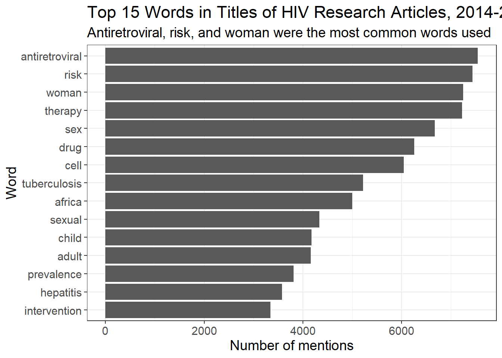
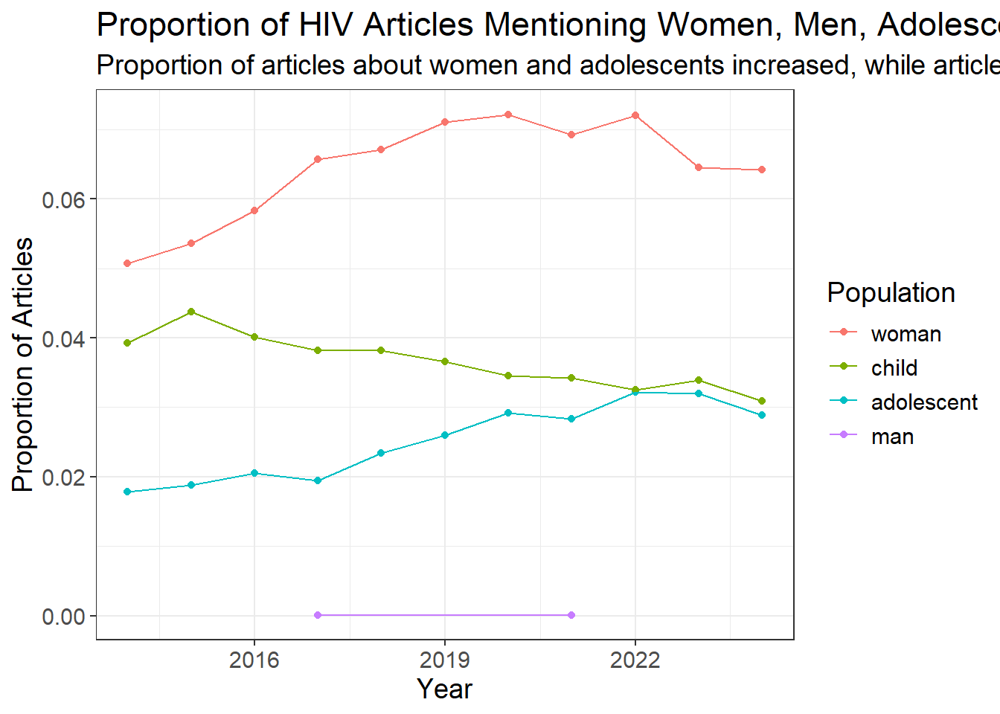
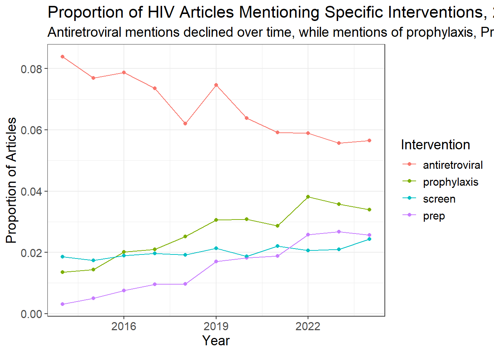
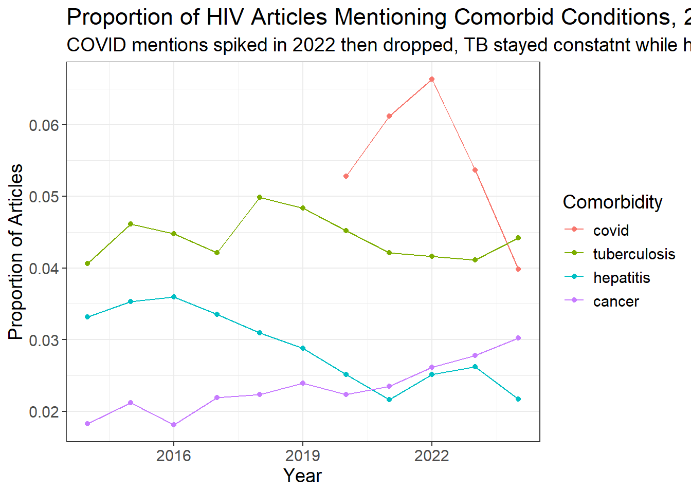
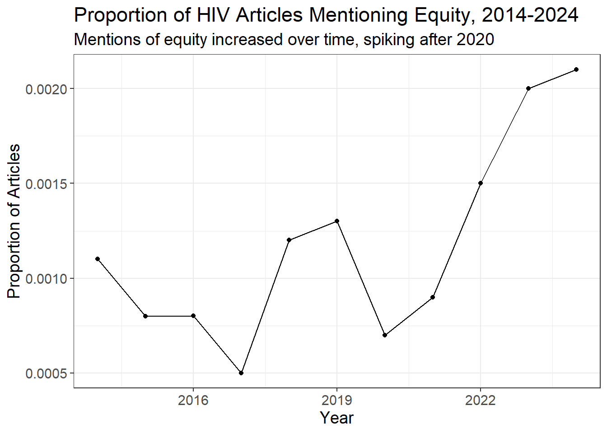

# loading packages, and setting the api key
library(rentrez)
library(progressr)
library(data.table)
set_entrez_key("c14a6209a64f2dd809205225f00d76053007")
# our tailored search query:
query <- '("HIV" OR "AIDS") AND
("epidemic" OR "treatment" OR "prevention" OR "detection" OR "vaccine" OR
"mathematical modeling" OR "prognosis" OR "case study" OR "healthcare" OR
"public health" OR "immunology" OR "infectious diseases")
NOT ("conference" OR "summit" OR "legal" OR "audiology" OR "non-HIV infections"
OR "qi gong" OR "hearing" OR "strategy" OR "debate" OR "response" OR "comments" OR "editorial")'Guardians of the Gitlaxy: Final Project Writeup
Topics and Trends in HIV Research from 2014-2024
Team Members
Thanh Doan (tdoan7 – tdoan7@jh.edu) Ilina Odouard (iodouar1 – iodouar1@jh.edu) Hridika Shah (hshah25 – hshah25@jh.edu) Jonathan Ye (jye41 – jye41@jh.edu)
Introduction
Our project addresses the question: How have the major topics in HIV research—including clinical advancements, public health programming, and policy interventions—evolved over time from 2014 to 2024, and what patterns or shifts can be identified across these areas? This question is important as it sheds light on areas where significant progress has been made and where gaps remain, guiding future research priorities, resource allocation, and public health strategies.
Goals and Accomplishments: Our initial goal was to analyze trends in HIV research topics using PubMed metadata. Specifically, we aimed to identify shifts in the prevalence of keywords across research articles, visualize these trends over time, and provide insights into the evolution of HIV research focus areas. Along the way, we successfully:
Extracted publication metadata (titles, dates, and UIDs) from PubMed using the rentrez API.
Cleaned and processed the data, including removing stop words, lemmatizing terms, and tokenizing titles to capture high-frequency keywords.
Conducted trend analyses over the study period (2014–2024) and visualized the results on a Quarto website.
Published detailed documentation to ensure reproducibility and usability on our GitHub repository.
Prior Work in the Field: Previous research includes Fajardo-Ortiz et al., who analyzed the evolution of biomedical knowledge in HIV research using text mining and network analysis. Additionally, Merson’s work outlined a timeline of key HIV research milestones from 1981 to 2006. However, no prior study has examined broader trends in HIV research topics, especially in areas like public health programming and policy interventions, making our work unique in its scope and focus.
Finally, we combined functional programming and natural language processing paradigms:
Functional programming ensured efficient, reusable, generalizable functions for tasks like accessing article titles, keyword extraction and data transformations.
NLP techniques, implemented via tidytext in R, enabled tokenization, lemmatization, and keyword analysis, providing deeper insights into textual patterns.
Methods
Technical Challenges: Throughout the project, we faced several challenges, including managing PubMed API rate limits and restrictions on batch size, which necessitated an efficient data retrieval pipeline. Data cleaning posed its own difficulties, as we had to carefully design processes to remove irrelevant terms, lemmatize words for consistency, and handle a large volume of data spanning an entire decade. Additionally, transforming the raw metadata into a meaningful format for analysis required considerate amounts of computational effort and precision.
Data and Figures: Our dataset comprised CSV files from 2014–2024, each containing 5,000–10,000 rows (one row per article) with columns for ID, title, and publication year. After processing, the combined dataset included over 930,000 rows, with tokenized words added as a fourth column. Figures on the website, such as keyword trend graphs, population focus analyses, and intervention themes, are complemented with clear legends and titles, making them accessible to general and technical audiences alike.
Data Collection
Here is a quick demo of how we collected the pubmed articles using the rentrez api! Since this process took a while to run, we will only demonstrate it for one year.
Here, you can see our tailored query, which was developed to catch any potentially irrelevant articles from the start. For example, we noticed some articles mentioning “hearing aids” which has no relation to AIDS/HIV, which motivated our exclusion of audiology.
# Define year ranges
start_year <- 2000
end_year <- 2000
#end_year <- 2002
# Define proper 5-year intervals (now 1 year intervals)
year_ranges <- lapply(seq(start_year, end_year, by = 1), function(year) {
range_end <- min(year, end_year) # Ensure we don't exceed end_year
return(c(year, range_end))
})# Function to fetch and save articles for a year range
fetch_and_save_articles <- function(range_start, range_end) {
cat(sprintf("Processing range: %d-%d\n", range_start, range_end))
# Perform the PubMed search
search_results <- tryCatch(
entrez_search(
db = "pubmed",
term = query,
mindate = as.character(range_start),
maxdate = as.character(range_end),
use_history = TRUE
),
error = function(e) {
message(sprintf("Error during search for range %d-%d: %s", range_start, range_end, e$message))
return(NULL)
}
)
if (is.null(search_results) || search_results$count == 0) {
message(sprintf("No results found for range %d-%d.", range_start, range_end))
return(NULL)
}
cat(sprintf("Found %d results for range %d-%d\n", search_results$count, range_start, range_end))
# Fetch article summaries in batches
batch_size <- 100
range_articles <- list()
for (start_idx in seq(0, search_results$count - 1, by = batch_size)) {
Sys.sleep(0.34) # Rate limit: 3 requests per second
summary_data <- tryCatch(
entrez_summary(
db = "pubmed",
web_history = search_results$web_history,
retmax = batch_size,
retstart = start_idx
),
error = function(e) {
message(sprintf("Error during summary fetch for batch starting at %d: %s", start_idx, e$message))
return(NULL)
}
)
#str(summary_data)
if (is.null(summary_data)) next
# Extract and validate data
articles <- lapply(summary_data, function(x) {
if (is.atomic(x)) {
message("Skipping atomic vector in summary data.")
return(NULL)
}
if (!is.null(x$uid) && !is.null(x$sorttitle) && !is.null(x$pubdate)) {
pub_year <- as.numeric(sub(".*?([0-9]{4}).*", "\\1", x$pubdate))
return(list(
UID = x$uid,
Title = x$sorttitle,
PublicationDate = x$pubdate,
PublicationYear = pub_year
))
}
NULL
})
# Filter out NULL entries
articles <- Filter(Negate(is.null), articles)
# Combine into a data frame or data table
if (length(articles) > 0) {
batch_df <- data.table::rbindlist(articles, use.names = TRUE, fill = TRUE)
range_articles[[as.character(start_idx)]] <- batch_df
} else {
message(sprintf("No valid articles in batch starting at %d", start_idx))
}
}
if (length(range_articles) > 0) {
range_df <- data.table::rbindlist(range_articles, use.names = TRUE, fill = TRUE)
range_df <- unique(range_df) # Deduplicate
cat("there are ", nrow(range_df), "articles for this range\n")
file_name <- sprintf("data/sample_pubmed_hiv_articles_%d_%d.csv", range_start, range_end)
data.table::fwrite(range_df, file_name) # Write to CSV
cat(sprintf("Saved articles for range %d-%d to %s\n", range_start, range_end, file_name))
} else {
message(sprintf("No articles to save for range %d-%d.", range_start, range_end))
}
}Here is our function that collects articles given our query and any time range. It also contains several checks for errors, and writing this function allowed us to easily test our process for variable time windows.
#for (range in year_ranges) {
# cat(sprintf("Processing range %d-%d", range[1], range[2]))
# fetch_and_save_articles(range[1], range[2])
#}print('this is what our raw data format looks like!')[1] "this is what our raw data format looks like!"knitr::kable(head(read.csv('data/sample_pubmed_hiv_articles_2000_2000.csv')))| UID | Title | PublicationDate | PublicationYear |
|---|---|---|---|
| 11132073 | prevalence of human immunodeficiency virus hiv antibody in critically ill emergency patients in gij n spain | 2000 Jun | 2000 |
| 11131740 | nutritional factors and vertical transmission of hiv 1 epidemiology and potential mechanisms | 2000 Nov | 2000 |
| 11131739 | role of antiretrovirals and drug resistance in vertical transmission of hiv 1 infection | 2000 Nov | 2000 |
| 11131738 | genital tract infections and perinatal transmission of hiv | 2000 Nov | 2000 |
| 11131737 | subclinical chorioamnionitis as a targetable risk factor for vertical transmission of hiv 1 | 2000 Nov | 2000 |
| 11131734 | cost effectiveness of a single dose nevirapine regimen to mother and infant to reduce vertical hiv 1 transmission in sub saharan africa | 2000 Nov | 2000 |
Data Cleaning
In this section, we used a custom function to combine datasets from multiple years into one dataset, and several language processing packages to tokenize the text of the article titles and remove stop words.
# load relevant packages, clear existing workspace
library(tidyverse)── Attaching core tidyverse packages ──────────────────────── tidyverse 2.0.0 ──
✔ dplyr 1.1.4 ✔ readr 2.1.5
✔ forcats 1.0.0 ✔ stringr 1.5.1
✔ ggplot2 3.5.1 ✔ tibble 3.2.1
✔ lubridate 1.9.3 ✔ tidyr 1.3.1
✔ purrr 1.0.2
── Conflicts ────────────────────────────────────────── tidyverse_conflicts() ──
✖ dplyr::between() masks data.table::between()
✖ dplyr::filter() masks stats::filter()
✖ dplyr::first() masks data.table::first()
✖ lubridate::hour() masks data.table::hour()
✖ lubridate::isoweek() masks data.table::isoweek()
✖ dplyr::lag() masks stats::lag()
✖ dplyr::last() masks data.table::last()
✖ lubridate::mday() masks data.table::mday()
✖ lubridate::minute() masks data.table::minute()
✖ lubridate::month() masks data.table::month()
✖ lubridate::quarter() masks data.table::quarter()
✖ lubridate::second() masks data.table::second()
✖ purrr::transpose() masks data.table::transpose()
✖ lubridate::wday() masks data.table::wday()
✖ lubridate::week() masks data.table::week()
✖ lubridate::yday() masks data.table::yday()
✖ lubridate::year() masks data.table::year()
ℹ Use the conflicted package (<http://conflicted.r-lib.org/>) to force all conflicts to become errorslibrary(stringr) # clean character strings
library(tidytext) # tokenize text
library(textstem) # lemmatize wordsLoading required package: koRpus.lang.en
Loading required package: koRpus
Loading required package: sylly
For information on available language packages for 'koRpus', run
available.koRpus.lang()
and see ?install.koRpus.lang()
Attaching package: 'koRpus'
The following object is masked from 'package:readr':
tokenizelibrary(stopwords) # stop words
rm(list=ls())Define stop words and custom stop words to exclude
# stop words
data(stop_words)
table(stop_words$lexicon)
onix SMART snowball
404 571 174 # define custom stop words
hiv_words <- data.frame(word = c("human", "immunodeficiency", "virus", "hiv", "aids", "aid", "acquired", "immunodeficiency", "syndrome", "disease", "diseases", "study", "trial", "randomized", "control", "patient", "review", "infection", "health", "live", "care", "infect", "people", "analysis", "factor", "base", "cohort", "clinical", "outcome", "test", "south", "positive", "systematic", "model", "impact", "associate", "effect", "cross", "viral", "cd", "population", "report", "epidemic", "treatment", "prevention", "detection", "vaccine"))A function to combine csv files and clean data for the specified years
combine_all_articles <- function(file_path_template, years, custom_stop_words = NULL) {
# file_path_template: Template for file paths
# years: A vector of years
# custom_stop_words: Data frame of pre-defined custom stop words to remove
# Load default stop words
data(stop_words)
# Combine default and custom stop words into one data frame
if (!is.null(custom_stop_words)) {
stop_words <- bind_rows(stop_words, custom_stop_words)
}
combined_articles <- data.frame() # Initialize an empty data frame
for (year in years) {
# Generate the file path for the current year
file_path <- gsub("YEAR", year, file_path_template)
if (file.exists(file_path)) {
# Read the CSV file
articles <- read.csv(file_path)
# Ensure the required column exists
if ("Title" %in% colnames(articles)) {
# Tokenize (words) and clean titles
articles_clean <- articles %>%
unnest_tokens(word, Title, token = "words", drop = FALSE) %>%
mutate(Year = year, # Add year column
word = lemmatize_words(word)) %>% # Lemmetize words
anti_join(stop_words, by = "word") %>% # Remove stop words
mutate(word = str_replace(word, "[0-9]+", "")) %>% # remove numbers and other characters
filter(word != "") # remove empty observation rows
# Combine results
combined_articles <- bind_rows(combined_articles, articles_clean)
} else {
warning(sprintf("Missing 'Title' column in file for year %s: %s", year, file_path))
}
} else {
warning(sprintf("File for year %s not found: %s", year, file_path))
}
}
return(combined_articles)
}Call the function to create the analytic dataset
all_articles <- combine_all_articles(file_path_template = "data/pubmed_hiv_articles_YEAR_YEAR.csv",
years = 2014:2024,
custom_stop_words = hiv_words
)First, we loaded a number of packages into the library, including Tidyverse, Strings, Tidytext, Textstem, and Stopwords. Next, we loaded the stop words data frame and created a custom stop words data frame with words such as human immunodeficiency virus (HIV), disease, study, trial, people, and review. Then, we wrote a function that would combine all the CSV articles and clean the data. The inputs of the function were the general file path template, a vector of years that you aimed to combine the data for, and the custom stop words data frame generated above.
Within the function, the stop words and custom stop words are combined into one data frame. Then the function initializes an empty combined articles data frame. The function uses a for statement, for each year within the vector of years specified as the input the function will call the CSV (if the file exists). It will ensure that the ‘title’ column is found within that file, and then clean the data. The data cleaning process involves tokenizing the words in the titles, lemmatizing the words, removing stop words, removing numbers, and finally removing empty observation rows. The last few lines of code in the function bind the cleaned data to the empty data frame initialized earlier, and repeat this process for all the years within the year vector. The function will return a final data frame of all the combined articles for the years specified. We included an example call for 2014 to 2024 as this was the dataset used for our analysis.
Data Analysis
In this section, we conducted a descriptive analysis of the data, producing several visualizations. In the first figure, we depicted the top 15 most commonly used words in the article titles. Based on the top 40 words (not shown in the figure), we developed the themes for the following figures: populations by age/gender, interventions, and comorbidities. In the last figure, we chose to examine how often the word “equity” occurred. Although it was not one of the most common words, we were interested in understanding whether its increasing focus more broadly in public health was replicated in HIV research.
Figure 1: Top 15 Words in Titles of HIV Research Articles, 2014-2024
all_articles %>%
group_by(word) %>%
summarize(count = n()) %>% #count is the number of times the word/phrase appears
arrange(desc(count)) %>% #sort in descending order by count
slice_head(n=15) %>% #keep only top 15 words/phrases
ggplot(aes(x=reorder(word, count), y=count, group=1)) +
geom_col() +
coord_flip() +
labs(title = "Top 15 Words in Titles of HIV Research Articles, 2014-2024",
subtitle = "Antiretroviral, risk, and woman were the most common words used",
x = "Word",
y = "Number of mentions") +
theme_bw() +
theme(text = element_text(size = 14))
Calculate Proportion of HIV Articles Mentioning Keywords in Title, 2014-2024
This section calculates the proportion of publications in each year that mention each word. We used the proportion of articles instead of the number of articles because there could have been a different number of articles in each year.
target_words <- c("antiretroviral", "screen", "prep", "prophylaxis", "tuberculosis", "hepatitis", "covid", "cancer", "woman", "adolescent", "child", "man", "equity")
line_graph <- all_articles %>%
filter(word %in% target_words) %>%
group_by(Year, word) %>%
summarise(publications = n_distinct(UID), .groups = "drop") %>%
left_join(
all_articles %>%
group_by(Year) %>%
summarise(total_publications = n_distinct(UID)),
by = "Year"
) %>%
mutate(proportion = publications / total_publications)Figure 2: Populations Studied in HIV Articles by Age/Gender Over Time, 2014-2024
line_graph %>%
filter(word == "woman" | word == "man" | word == "adolescent" | word == "child") %>%
ggplot(aes(x=Year, y=proportion, group=reorder(word, -proportion), color=reorder(word, -proportion))) +
geom_point() + geom_line() +
labs(title = "Proportion of HIV Articles Mentioning Women, Men, Adolescents, and Children, 2014-2024",
subtitle = "Proportion of articles about women and adolescents increased, while articles about children with HIV decreased",
x = "Year",
y = "Proportion of Articles",
color = "Population") +
theme_bw() +
theme(text = element_text(size = 14))
Figure 3: Interventions for HIV Studied Over Time, 2014-2024
line_graph %>%
filter(word == "antiretroviral" | word == "prophylaxis" | word == "screen" | word == "prep") %>%
ggplot(aes(x=Year, y=proportion, group=reorder(word, -proportion), color=reorder(word, -proportion))) +
geom_point() + geom_line() +
labs(title = "Proportion of HIV Articles Mentioning Specific Interventions, 2014-2024",
subtitle = "Antiretroviral mentions declined over time, while mentions of prophylaxis, PrEP, and screening increased",
x = "Year",
y = "Proportion of Articles",
color = "Intervention") +
theme_bw() +
theme(text = element_text(size = 14))
Figure 4: Comorbidities With HIV Studied Over Time, 2014-2024
line_graph %>%
filter(word == "tuberculosis" | word == "hepatitis" | word == "covid" | word == "cancer") %>%
ggplot(aes(x=Year, y=proportion, group=reorder(word, -proportion), color=reorder(word, -proportion))) +
geom_point() + geom_line() +
labs(title = "Proportion of HIV Articles Mentioning Comorbid Conditions, 2014-2024",
subtitle = "COVID mentions spiked in 2022 then dropped, TB stayed constatnt while hepatitis declined and cancer increased",
x = "Year",
y = "Proportion of Articles",
color = "Comorbidity") +
theme_bw() +
theme(text = element_text(size = 14))
Figure 5: Equity as a Theme in HIV Articles Over Time, 2014-2024
line_graph %>%
filter(word == "equity") %>%
ggplot(aes(x=Year, y=proportion, group=1)) +
geom_point() + geom_line() +
labs(title = "Proportion of HIV Articles Mentioning Equity, 2014-2024",
subtitle = "Mentions of equity increased over time, spiking after 2020",
x = "Year",
y = "Proportion of Articles") +
theme_bw() +
theme(text = element_text(size = 14))
Conclusion
What We Learned: We gained experience in functional programming and natural language processing (NLP), which were pivotal in handling textual data. It also reinforced the importance of clear documentation and user-friendly interfaces, as our final product needed to cater to both technical and general audiences. Finally, we deepened our understanding of the collaborative and interdisciplinary nature of data-driven research, where computational tools and domain knowledge converge to address complex questions.
Our final project is linked here: https://thanhvdoan.quarto.pub/project4-biostat777/
Our final data analytic product works as intended, integrating data collection, processing, and visualization. The components combine raw data flowing through cleaning pipelines into visualizations that capture evolving trends in HIV research.
Our product is designed to be both easy to use and well-documented. As aforementioned, the project’s GitHub repository includes a README.md file summarizing key details about the project, as well as details about the team members and our contact information. We provided clear links to all the necessary code files, ensuring reproducibility. The Quarto website is structured into distinct sections for findings (Results) and technical methods (Data Cleaning and Data Collection Demo), making it accessible to users with varying levels of expertise. Well-labeled figures accompanied by data interpretation further enhance usability, ensuring a seamless user experience.
Our project addresses a non-trivial challenge: analyzing a vast PubMed dataset spanning a decade while balancing computational efficiency and interpretive depth. The importance of the HIV research field cannot be overstated, as it directly impacts global health and shapes funding priorities. By using NLP to uncover patterns in research topics and combining this with data visualizations on the Quarto website, our work reflects creativity and contributes insights to this critical area of study.
Works Cited
Fajardo-Ortiz D, Lopez-Cervantes M, Duran L, et al. The emergence and evolution of the research fronts in HIV/AIDS research. PLoS One. 2017;12(5):e0178293. Published 2017 May 25. doi:10.1371/journal.pone.0178293
Merson MH. The HIV–AIDS Pandemic at 25 — The Global Response. N Engl J Med. 2006;354(23):2414-2417. doi:10.1056/NEJMp068074.